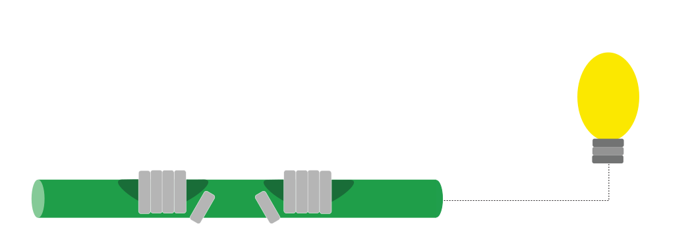
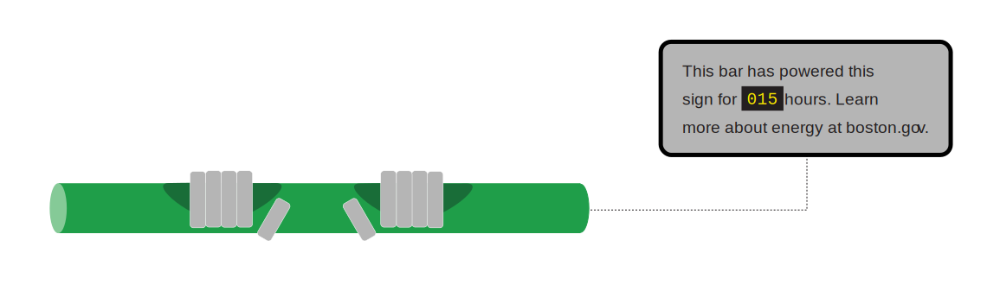
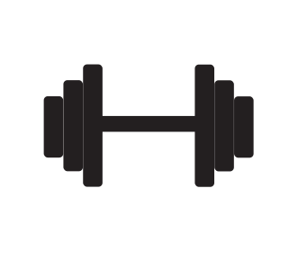

STREETSCAPE INNOVATION
Install thermoelectric pull up bars in public transportation areas to encourage exercise and scientific literacy.
Thermoelectric pull up bars scattered in MBTA lobbies and bus stops offer bypassers the ability get some exercise, generate a little electricity, and learn about alternative sources of energy. Ultimately, the bars demonstrate the potential humans have to generate electricity with heat from our hands, which is a personal and powerful way to demonstrate the power one indiviudal has in the global effort to develop alternative sources of energy.
FITNESS AND SCIENCE: A BOSTONIAN MATCH
First, thermoelectric sensors are fun, cheap ways to learn about science. Second, Boston take fitness very seriously. Installing thermoelectric pull up bars offers city goers an educational and physical activity that aligns well with two prevelant industries upon which Boston prides itself.
As long as the bar is at a lower temperature than the body temperature, the thermoelectric bar exploits the different temperatures to generate electricity. Whether a parents hold their child up to hang on the bar or college athlete does 20 pull ups while waiting for a train, heat transfer occurs and generates small amounts of electricity that can be used in a variety of ways.


OVERVIEW OF THE BENEFITS

Fitness
Encourage exercize on the way to and from work by offering quick pull up station in high traffic areas around the city.
Streetscape
Update the transporatation streetscape with a non-intrusive installation that encourages exercise and scientific literacy
Scientific Literacy
Educate the public on the meaningful impact one individual has on the global effort to create alternative sources of energy.
FURTHER POTENTIAL
iOS Integration
Build an app to allow the city and civilians the ability to find pull up bars, keep track of energy generated from each installation, and see how much money is saved by relying on electricity generated from the bars instead of from traditional sources.
Thermoelectric urban infrastructure
Integrate thermoelectric devices into other pieces of urban infrastructures like benches. Benches offer lower barriers of engagement and can generate more electricity give their larger surface area.
Boston Science Research x Public Interactive Displays
The diversity of cutting edge research happening in Boston is mind blowing, but it is not accessible to everyone. Distributing bite sized demonstrations of scientific principles in the form of civic innovation (like public thermoelectric pull up bars) can dramatically increase scientific literacy and introduce the public to the amazing work happening right here at home.